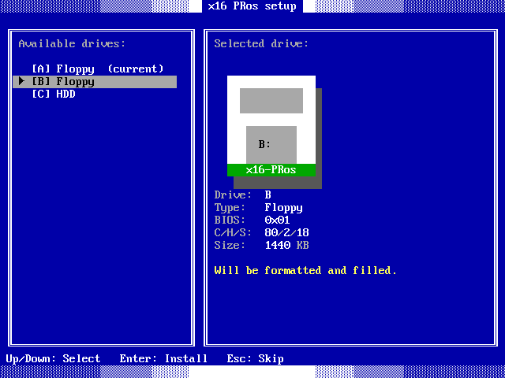

Before you start
x16-PRos boots through the BIOS. It does not support UEFI. Any PC from the 386 era onwards will run it, and so will most modern machines as long as legacy boot is still available.
.IMG file from the download button on the
front page, a USB stick or a floppy, and a way to write raw images to it.Writing the image
-
Pick the device
A USB flash drive or a 1.44 MB floppy. Writing the image overwrites the whole device, so make sure there is nothing on it you want to keep.
-
Write it
On Windows use Rufus and pick DD Image mode. On Linux and macOS use
dd:sudo dd if=x16-PRos.img of=/dev/sdX bs=1M status=progress conv=fsyncReplace
/dev/sdXwith your device, not a partition on it.
Setting up the firmware
On a UEFI machine you need the compatibility support module, usually called CSM or Legacy Boot. Enter the firmware setup with F2 or Delete during power-on and enable it.

Booting
Restart and open the boot menu, usually F8, F11, F12 or Esc. Choose the entry for your drive that is not prefixed with UEFI.

Booting takes a couple of seconds. On the first launch the setup wizard appears and offers to install the system onto a hard disk.

Installing to a hard disk
The setup wizard formats the target as FAT12 and copies the system tree onto it. FAT12 addresses at most 4084 clusters, so a volume cannot exceed 32 MB; a larger disk is formatted to 32 MB and the remaining space is left alone. After that the machine boots from the disk without the USB stick.
Setup can be run again at any time from the terminal with setup.